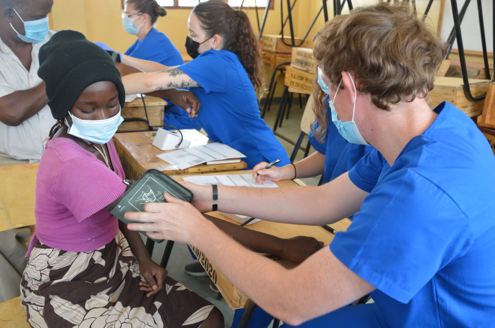

My Skills...

JavaScript

HTML5

CSS

Python

PosgreSQL

MongoDB

Handlebars

Node.js

Express.js
As soon as I graduated high school, I joined the Marine Corps, developing my leadership, problem-solving, Collaboration, and Communication skills as a Combat Engineer!
I thought every aspect of the job was interesting, but one moment I came to the realization that I wanted more. This is the moment where I decided to pursue a career as a physician, specifically a specialization in neurosurgery as the brain has always interested me, and I wanted to strive for something challenging yet rewarding.
I started at Kennesaw State University and worked exceptionally hard to stand out as extraordinary student so that I could transfer to Emory University, my dream school as it was known for it's pre-medicine program and medical school.
As time passed, I gained a great deal of experiences that I will cherish throughout my life, becoming an EMT, and partaking in an internship opportunity in Mombasa, Kenya at Coast General Teaching & Referral Hospital. Eventually, I came to a crossroads where I stumbled upon another opportunity that I believe better suited my skill set and thought processes within the tech space.
I attended a Cyber Security bootcamp for Fullstack Academy but what really stood out was the coding portion in Python where I became passionate and lastly decided to attend Perficient's Bright Paths Program where I fully developed my dedication for Software Engineering and look forward to the next step in this momentous journey.
JavaScript
HTML5
CSS
Python
PosgreSQL
MongoDB
Handlebars
Node.js
Express.js
I chose this project because I have a passion for traveling and I wanted to implement a social media app where users can share their tips for locations and recieve knowledge on places to explore before planning their trip!
For my project, I wanted to use a tech stack that was organized, where I can prevent unauthorized access to the user route, and to make it dynamic in nature so I utilized the Handlebars template engine, Node.js, Express.js, MongoDB Atlas for the database and passport for authentication.